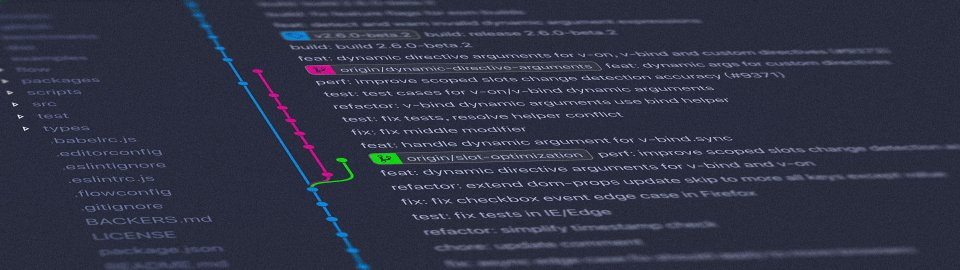

Intro
Hey ! My name is Serge Thomas. The first time i was introduced to a computer was in grade 3 and this was way back in 2005, the only thing
we could really do with it was play pinball and mess around with MS Paint but i always wondered how it was that i was able create colors on this screen
microwave (Yupp i was around when moniters were still big!). From that point on my curiosity turned into interest and that interest into a love for the potential computers, robots/robotics,
and technology held in my life. Fast Track forward and I am a Junior Software Developer with a love for extreme sports, animals, anime and of course COMPUTERS!
because of this interest i have chosen software development as my primary vocation.
Projects
-
Bookstore Program (Java & MySQL)
I created a simple bookstore program for libraries that allows
librarians to enter books into the inventory, search through them, delete entries and update them
The program was made in Java, i utlised the Swing framework to enable a GUI for easier client use,
for the database i used MySQL to store the data from the books and initialised it to work with the code
Bookstore - Program Link
-
Rando Prizey (Python)
This is simple game similar to pac man, it consists of a few enemies that should obviously be
avoided, the aim of the game is to survive the spawn of enemies that will pop up randomly and try to identify the
prize to win. The game was made in Python and the Pygame module was used to bring it to life.
Rando Prizey - Program Link
-
Sickle Cell Disease (Python)
Program to simulate methods for storing, retrieving and analysing biological data.
the program is meant to display use of Lists, Functions and String Handling in python
SickleCell Disease - Program Link
Skills

Listed below are Technical skills i have aquired to produce some of the projects i have undertaken
- HTML & HTML 5
- CSS
- Python
- Java
- SQL
- MySQL
- Version Control (Git)
Address
Kensington, 2101
Johannesburg, Gauteng
South Africa
Email
smughemuzi@gmail.com